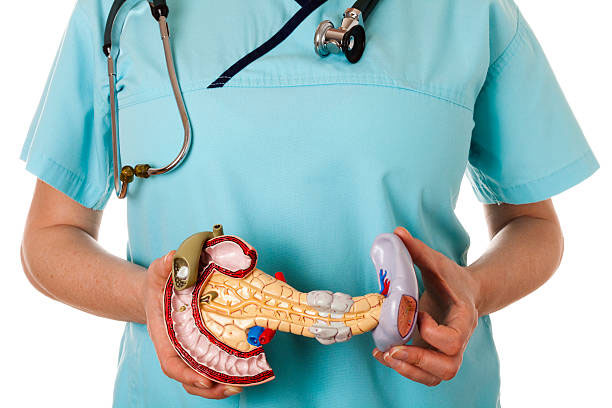
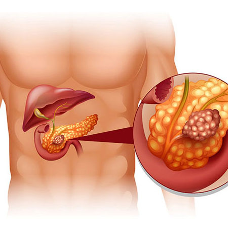
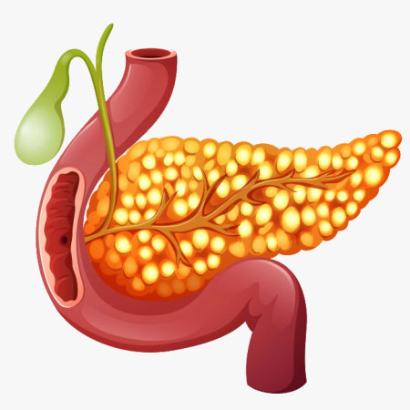
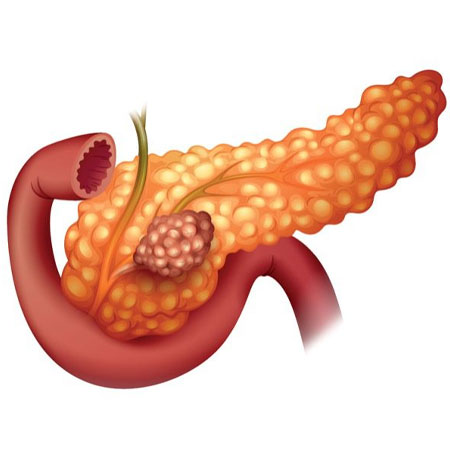

INTRODUCTION
- Pancreas is a small retroperitoneal organ with vital role in digestion process and hormonal balance of the body.
- Important hormones are insulin and glucagon to maintain sugar balance in our body.
- Pancreatic diseases are in increasing incidence because of alcohol abuse and leading to life threatening problems.
- Pancreatic cancer incidence has been increasing and because of its late presentation, the treatment is getting delayed with poor outcomes.
- Awareness about the pancreatic diseases is timely concern in present scenario.
Pancreatic diseases are divided into
- benign ( non cancers)
- Malignant (cancers)
Benign
Common is pancreatitis, which includes
- Acute pancreatitis
- Chronic pancreatitis
ACUTE PANCREATITIS (AP)
It is defined as an acute agonising pain due to non infective inflammation of pancreas .
Aetiology
- gall stone/bile duct stones (40%)
- Alcohol (35%)
- Congenital Pancreaticobiliary malunion (Pancreas divisum ,annular pancreas)
- Trauma
- Drug induced(anti seizures medications ——sodium valproate ,HIV medications)
- hyper triglyceridemia
- hypercalcemia
- Autoimmune pancreatitis
- Viral(mumps and coxsakie)
- Idiopathic.

Symptoms
It is a dangerous disease with almost all cases needs hospital admission but 80% of cases recovers well
Mild
Acute severe abdominal pain radiating to back relieving on stooping forward associated with Nausea and vomiting.
Moderate
Above symptomatology plus hypotension ,tachycardia and decrease in urine output.
Severe disease: (infected necrotising pancreatitis) only 20% of cases
Above symptomatology plus organ failure like
- kidney failure (acute kidney injury ,AKI)
- Respiratory failure (acute respiratory distress syndrome ,ARDS)
- Cardiovascular failure
- Haematological failure .
Diagnosis
Blood investigations:
- Serum amylase
- Serum lipase
Radiological
- Ultrasound
- Ct scan abdomen and pelvis
Treatment
Depends on the severity of the disease.
Mild disease
- IV FLUIDS
- ANALGESICS
- SUPPORTIVE CARE
- ABSTINENCE FROM ALCOHOL
Moderate disease:
- ICU CARE
- Measures to prevention of organ failure
- Nutritional support
Severe disease
- ICU CARE
- ORGAN SUPPORT like
- Ventilator (for ARDS)
- Dialysis (AKI)
- Inotropes
- Nutritional support
- ANTIBIOTICS
- MAY REQUIRE SURGICAL INTERVENTION .
Treatment depending on aetiology :-
- ERCP and calculi removal ( for gall stone pancreatitis) followed by laparoscopic cholecystectomy.
- surgical Necrosectomy (for infected Necrotising pancreatitis)
SEQUELAE OF PANCREATITIS
- Chronic pancreatitis
- Acute fluid collection
- Pseudo cyst of pancreas
- Splenic vein thrombosis >>>> portal hypertension
- Splenic artery aneurysm
- 1Pancreatic ducal disruption leading to ascites
- Pancreatico pulmonary fistula.
Surgical treatment of Sequalae of acute pancreatitis
- Acute fluid collection:- endoscopic drainage
- Pseudo cyst of pancreas:- cysto gastrostomy, cystojejunostomy (drainage of fluid into intestine).
- Splenic vein thrombosis and portal hypertension:-splenectomy
- Splenic artery aneurysm: splenic artery ligation and splenectomy.
- Pancreatic abscess : per cutaneous drainage
- Pancreatic ductal disruption with ascites:-
- ERP +Stenting
- distal pancreatectomy
- Pancreatico pleural fistula:- It includes management similar to pancreatic ductal disruption plus ICD(chest tube) drainage.
Chronic pancreatitis
Recurrent attacks of acute pancreatitis with atrophy of gland associated with or without pancreatic ductal calculi ,stricture, ductal dilatation.
Aetiology:
Recurrent attacks of acute pancreatitis leads to chronic pancreatitis
Symptoms
- Severe recurrent abdominal pain radiating to back , feels better on stooping forward not responding to analgesics.
- Pain affecting day to day life
- Bulky, Foul smelling ,oily stools floating in the pan.
- Jaundice
- Hematemesis(blood vomiting)
- Black colour stool
- Loss of appetite, loss of weight
- Diabetic symptoms

Rare condition asymptotic chronic
pancreatitis also observed.
Diagnosis
- CT SCAN Abdomen
- ENDOSCOPIC ULTRASOUND
- MRCP/ERCP
Treatment
Only to cure symptoms of the disease
- Pancreatic enzymes
- Analgesics
- Antioxidants
- Obstinacy from alcohol
Surgical
- If patient is having unrelenting pain not responding to medical management with the pancreatic ductal calculi/Stricture with pancreatic ductal dilatation of >> 7mm with or without head mass will respond to surgical management well.
- IN selected cases of chronic pancreatitis, surgery will give permanent solution for pain .
- Frey's procedure( commonly performed) (Pancreatic head coring with jejunal anastomoses with pancreatic duct)
- Frey's with biliary bypass ( if associated with CBD Stricture).
- Whipples procedure ( if ass with mass in the head)
SEQUELAE:
- CBD STRICTURE (jaundice)
- MALIGNANCY (cancer)(3 out 100 chronic pancreatitis patients).
- Steatorrhea.
- Splenic vein thrombosis portal hypertension.
- Splenic artery aneurysm.
- Diabetes.
Pancreatic malignancies
Pancreatic is divided into
- HEAD
- BODY
- TAIL
Treatment Depends on the area of pancreas effected

Symptoms
- Loss of appetite
- Loss of Wight
- Jaundice
- Itching
- Sever back pain
- Black coloured stool
- Fluctuation of blood sugar level
Diagnosis
- LFT
- CA19-9
- CT SCAN
- Pet ct if needed
Treatment
Head region
Stage 1,2:-Whipples procedure
Stage 3,:-chemotherapy radiotherapy followed by surgery
body region
Stage 1,2:-central pancreatectomy
Stage 3:- chemotherapy Radiotherapy followed by surgery
Tail region
Stage 1,2,3, :- distal pancreatectomy
Stage 4:- palliative care